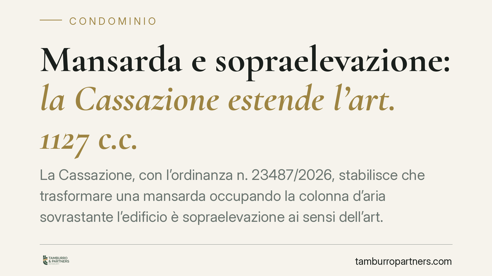

Mansarda e sopraelevazione: la Cassazione estende l'art. 1127 c.c.
La Cassazione, con l'ordinanza n. 23487/2026, stabilisce che trasformare una mansarda occupando la colonna d'aria sovrastante l'edificio è sopraelevazione ai sensi dell'art. 1127 c.c., anche senza aumento visibile dell'altezza. Ne derivano vincoli statici, antisismici e obblighi verso gli altri condomini che il proprietario dell'ultimo piano non può ignorare.

Il caso deciso dalla Corte
Il proprietario dell'ultimo piano aveva reso abitabile una mansarda intervenendo sul volume sottotetto, senza modificare in apparenza la quota del colmo del tetto. In primo e secondo grado si discuteva se tale intervento rientrasse o meno nella nozione di sopraelevazione.
La Cassazione, Sez. II, con l'ordinanza n. 23487 del 18 luglio 2026, ha chiarito un punto spesso frainteso: ciò che conta non è l'innalzamento "visibile" del tetto, ma l'occupazione della cosiddetta colonna d'aria, ossia lo spazio sovrastante l'edificio. Se l'intervento crea nuovo volume abitabile a scapito di quello spazio, siamo di fronte a una sopraelevazione.
Inquadramento normativo
L'art. 1127 cod. civ. riconosce al proprietario dell'ultimo piano (o del lastrico solare) la facoltà di sopraelevare, salvo che il titolo disponga diversamente. Si tratta però di un diritto non assoluto, bilanciato da tre limiti espressi dalla norma.
Il primo è statico: la sopraelevazione non è ammessa se le condizioni strutturali dell'edificio non la consentono (art. 1127, comma 2, c.c.). Il secondo è di tutela dell'aspetto architettonico e della luminosità: gli altri condomini possono opporsi se l'intervento pregiudica l'aspetto dell'edificio o diminuisce notevolmente aria e luce ai piani sottostanti (comma 3). Il terzo è economico: chi sopraeleva deve corrispondere agli altri condomini un'indennità proporzionale al valore dell'area occupata (comma 4).
La Corte ha ricondotto a questa cornice anche gli interventi che, pur senza alzare il profilo del tetto, sfruttano la colonna d'aria per generare superficie utile. La nozione di sopraelevazione, in altre parole, è sostanziale e non meramente geometrica.
Implicazioni pratiche
Per il proprietario dell'ultimo piano la pronuncia significa una cosa precisa: non basta restare "sotto il colmo" per sottrarsi agli obblighi dell'art. 1127 c.c. Se la trasformazione crea nuovo volume abitabile, scattano le verifiche statiche, l'obbligo di rispetto delle norme antisismiche vigenti e il possibile obbligo di indennità verso il condominio.
Il profilo antisismico merità attenzione particolare. L'intervento che incide sul carico dell'edificio comporta adempimenti tecnici e autorizzativi presso lo Sportello Unico per l'Edilizia e, nelle zone a rischio, il deposito o l'autorizzazione sismica. Procedere senza queste verifiche espone a responsabilità civili e a ordini di riduzione in pristino.
Per gli altri condomini, la decisione rafforza la tutela. Chi subisce una diminuzione di aria e luce, o teme un sovraccarico strutturale, dispone di strumenti concreti di opposizione e può pretendere l'indennità prevista dalla legge.
Resta centrale la prova. Occorre documentare lo stato dei luoghi prima e dopo l'intervento, l'effettiva occupazione della colonna d'aria e l'incidenza sui carichi. In mancanza di perizie, il contenzioso diventa incerto per entrambe le parti.
Cosa fare in concreto
- Verificate la natura dell'intervento prima di iniziare: fatevi redigere da un tecnico una relazione che accerti se la trasformazione della mansarda comporta occupazione della colonna d'aria e nuovo volume abitabile.
- Acquisite le verifiche statiche e sismiche: non procedete senza il giudizio di un ingegnere strutturista sull'idoneità dell'edificio a sostenere il nuovo carico.
- Controllate il titolo e il regolamento condominiale: accertate che non vi siano clausole che escludono o limitano il diritto di sopraelevazione.
- Quantificate l'indennità ex art. 1127, comma 4, c.c.: fate stimare il valore dell'area occupata per prevenire contestazioni sulla somma dovuta ai condomini.
- Documentate lo stato dei luoghi: se siete condomini contrari, raccogliete rilievi fotografici e tecnici su aria, luce e integrità architettonica prima che i lavori alterino la situazione.
Un punto fermo
La pronuncia conferma un orientamento di buon senso giuridico: la qualificazione di un intervento edilizio in condominio dipende dalla sua sostanza, non dall'apparenza esterna. Chi intende valorizzare un sottotetto farà bene a impostare il progetto fin dall'inizio nel rispetto dell'art. 1127 c.c., evitando contenziosi che possono condurre alla demolizione dell'opera.
Consigliamo di affrontare questi interventi con un'istruttoria tecnico-legale preliminare, che metta in sicurezza sia la regolarità dell'opera sia i rapporti con gli altri condomini.
---
*Contributo informativo a cura di Tamburro & Partners - Avv. Giuseppe Tamburro. Non costituisce parere legale.*
Ogni condominio ha una storia a sé.
Se gestisci un'amministrazione e vuoi un confronto su una specifica questione condominiale, scrivi allo studio. Ti rispondiamo entro un giorno lavorativo.